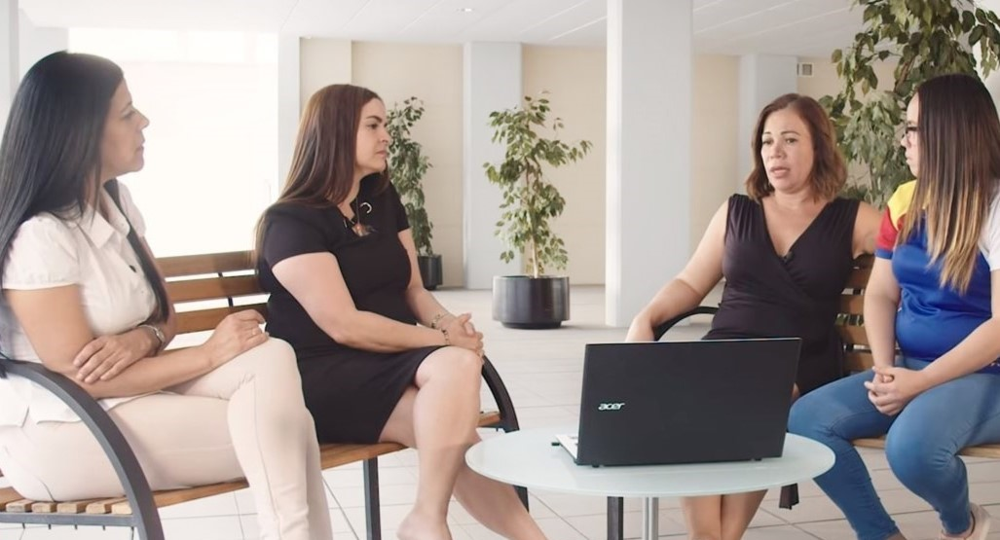

Solo en el primer mes de 2021 se registraron 18 asesinatos de mujeres en Venezuela, es decir, uno cada 38 horas. Este número ha seguido en aumento y para los primeros seis meses del año, la ONG reportó un acumulado de 177 asesinatos de mujeres en el territorio nacional y 99 en el extranjero, es decir, uno cada 20 horas.
De acuerdo con la resolución 48/104 de la asamblea general de las Naciones Unidas,
la violencia contra la mujer es entendida como todo acto de violencia basado en la
pertenencia al sexo femenino que tenga o pueda tener como resultado un daño o
sufrimiento físico, sexual o psicológico para la mujer, así como las amenazas de
tales actos, la coacción o la privación arbitraria de la libertad, tanto si se
producen en la vida pública como en la vida privada.
La historiografía mundial muestra cómo las mujeres han luchado para contar con
derechos civiles, sociales, políticos y religiosos, así como con igualdad de
condiciones y oportunidades de ascenso social.
A pesar de los logros alcanzados, la realidad de violencia sigue presente, de acuerdo con ONU Mujeres, 243 millones de mujeres y niñas sufrieron algún tipo de violencia física o sexual en el último año. La cuarentena por la pandemia de Covid-19 está agravando esta situación. «Desde que se desató el brote de Covid-19, los nuevos datos e informes que presentan quienes están en primera línea revelan que se ha intensificado todo tipo de violencia contra las mujeres y las niñas, sobre todo, la violencia en el hogar», señala la agencia de las Naciones Unidas para la igualdad de género y el empoderamiento de las mujeres en un artículo publicado en su página web.

El más reciente informe, presentado el 13 de septiembre de 2021 por la Oficina del Alto Comisionado de las Naciones Unidas para los Derechos Humanos, da cuenta de un contexto lleno de desprotección para niñas y mujeres, además de enfrentar una emergencia humanitaria compleja, que dificulta el acceso a medicamentos, atención sanitaria, comida y trabajo, la ACNUDH señala que «la situación de la violencia de género habría empeorado en 2020, así como la situación de la salud sexual y reproductiva».
Solo en el primer mes de 2021, el Observatorio Digital de Femicidios del Centro de Justicia y Paz (Cepaz) registró 18 asesinatos de mujeres en Venezuela, es decir, uno cada 38 horas. Este número ha seguido en aumento y para los primeros seis meses del año, la ONG reportó un acumulado de 177 asesinatos de mujeres en el territorio nacional y 99 en el extranjero, es decir, uno cada 20 horas.
Según la docente, la única manera de atacar el problema es mediante la actuación de la
sociedad civil organizada y la implementación dencampañas de concientización,
educación y denuncia.
“La educación es muy importante, y hago énfasis en el tema de educar a las niñas,
porque muchas veces las mujeres, en general, por la forma en la que hemos sido
educadas, ni siquiera nos damos cuenta de que somos víctimas de algún tipo de
agresión de género y damos por sentadas algunas conductas que, en realidad, no
deberían ser aceptadas y que llevan a la discriminación y descalificación
sistemática de la mujer, de sus actividades y de sus opiniones. La mujer debe
entender cuáles son sus derechos y cuáles son sus propias capacidades”.